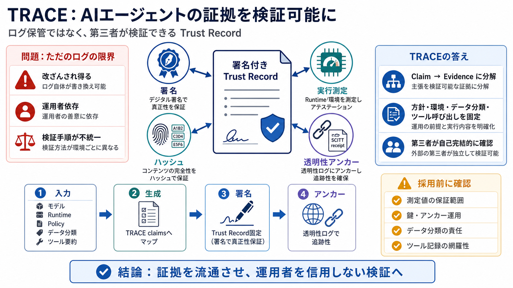

Hardware-attested receipts for AI agent actions - TRACE
TRACE profiles existing IETF and IRTF work rather than replacing it: RFC 9711 (EAT) for the claim envelope, RFC 9334 (RA…

TRACE profiles existing IETF and IRTF work rather than replacing it: RFC 9711 (EAT) for the claim envelope, RFC 9334 (RA…
TRACE builds on open IETF and IRTF standards: RFC 9711 (CBOR Web Token / EAT) for the claim envelope, RFC 9334 (RATS) fo…
It is a broad goal that EATs can be processed by relying parties in a general way regardless of the type, manufacturer, …
RATS also defines standard claim formats for conveying Evidence and Results; the principal token format is the Entity At…
| draft-lu-rats-federated-attestation-infrastructure | Federated Infrastructure Layer for Cross-Platform Device and Appl…